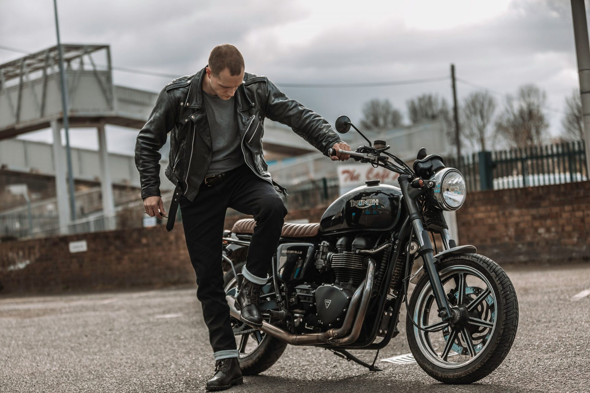
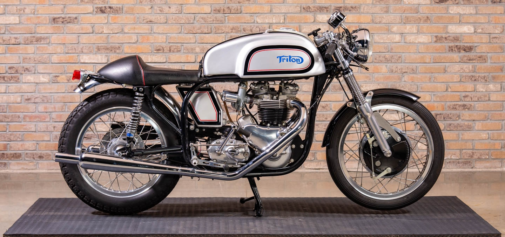

A cafe racer is more than just a motorcycle; it's a symbol of rebellion, freedom, and style. Originating in post-World War II Britain, cafe racers were born out of a desire for speed and a need to escape the monotony of everyday life. Stripped-down and modified for performance, these bikes were customized by their owners to achieve maximum speed and agility on the open road. Characterized by their minimalist design, low-slung handlebars, and rear-set foot pegs, cafe racers exude a raw and unapologetic aesthetic. Their sleek lines and stripped-back appearance reflect a no-nonsense approach to riding, where every element serves a purpose and excess is left behind.
The name "cafe racer" itself pays homage to the motorcycle subculture of the 1950s and 1960s, where young riders would frequent cafes, seeking out adrenaline-fueled thrills and camaraderie. Racing from one cafe to another, they pushed the limits of their machines and themselves, forging a sense of community and rebellion in the process.
Today, the spirit of the cafe racer lives on in custom-built motorcycles and a vibrant subculture of enthusiasts. From the streets of London to the boulevards of Los Angeles, cafe racers continue to inspire a sense of freedom and individuality, reminding us that the true joy of riding lies not just in the destination, but in the journey itself.